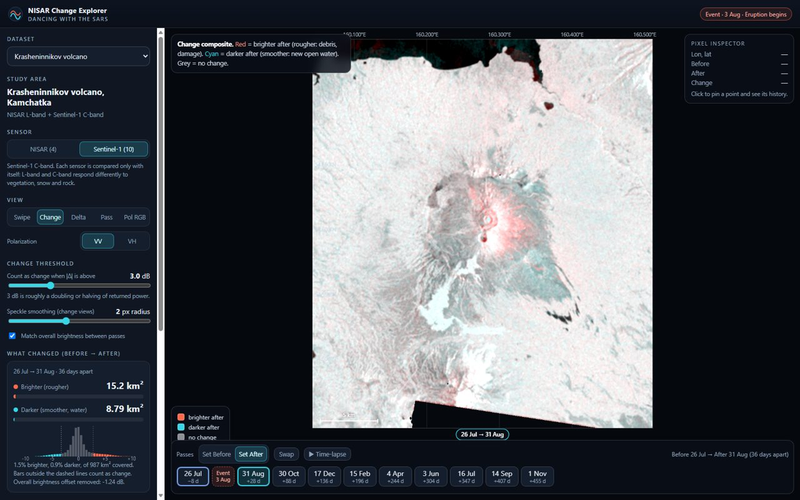
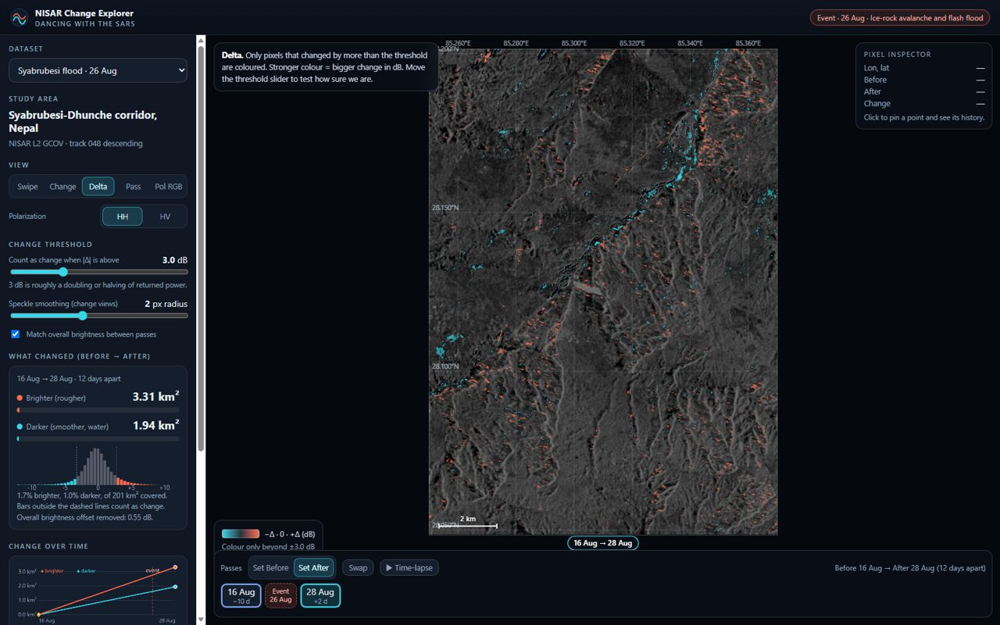
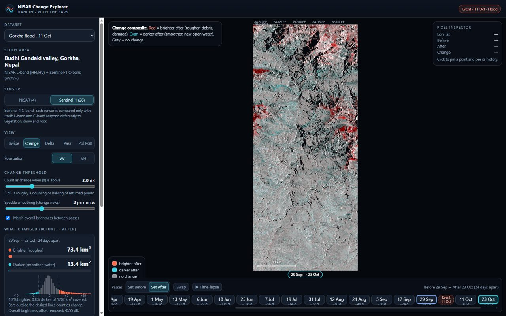

NISAR Change Explorer: presenter brief
What the dashboard shows, what the numbers mean, and a 5-minute talk track built on the results we actually measured.
The one-sentence pitch
Lead with the problem (disasters happen under cloud and at night; optical satellites go blind), then the tool, then the evidence, then the honest limits. Judges reward the last part.
What dB means (say this early)
A radar satellite sends a pulse and measures how much bounces back. That return is stored as backscatter in decibels (dB). dB is a log scale, so equal steps mean equal ratios:
- +3 dB = twice as much signal came back. −3 dB = half.
- +10 dB = ten times as much. −10 dB = a tenth.
- The viewer's default change threshold is 3 dB: a pixel only counts as changed if its return doubled or halved.
Values measured in our Gorkha Sentinel-1 data (VV, 29 Sep 2026): darkest 2% ≈ −18 dB, median land −8.2 dB, brightest 2% ≈ −1.5 dB.
Why things are dark or bright
- Smooth surfaces are dark. Calm water and smooth mud reflect the pulse away like a mirror. Floods show up as a drop in dB.
- Rough surfaces are bright. Debris, boulders, fresh rough lava, collapsed buildings scatter energy back. They show as a rise in dB.
- Wet snow is dark, because water absorbs the pulse. Vegetation brightens the cross-pol channel (HV or VH).
Polarizations
NISAR (L-band, 24 cm wavelength) records HH and HV. Sentinel-1 (C-band, 5.6 cm) records VV and VH. The first letter is how the pulse is sent, the second how it is received. Same-letter channels (HH, VV) track surface roughness and water; cross channels (HV, VH) track vegetation and volume. The longer L-band wave passes through foliage and dry snow that C-band bounces off, which is why we never difference one sensor against the other.
Reading the dashboard
| Part | What it tells you |
|---|---|
| Dataset menu | Switches between the three study sites. The URL keeps the choice (?d=data_gorkha). |
| Sensor | NISAR or Sentinel-1. Each sensor is only ever compared with itself. |
| Swipe | Before on the left, after on the right. Drag the handle. Best opener for an audience. |
| Change | Colour composite: red = brighter after (rougher: debris, damage, new rough lava), cyan = darker after (smoother: open water, wet snow), grey = unchanged. |
| Delta | Only pixels beyond the threshold are coloured; stronger colour = bigger change in dB. |
| Pass / Pol RGB | One image on its own; Pol RGB mixes the two polarizations (co-pol red, cross-pol green, ratio blue) to separate bare, vegetated and wet ground. |
| Threshold slider | How many dB a pixel must change to count. Moving it live shows how robust a finding is. |
| Speckle smoothing | Radar images are grainy. Smoothing averages neighbours: less noise, but narrow features (a river channel) blur. |
| What changed | Area brighter and darker in km², and a histogram of Δ dB. Bars outside the dashed lines are counted. |
| Change over time | Changed area for every pass against the chosen Before pass. A real change persists; noise jumps around. |
| Pixel inspector | Click any point: its dB before, after and the change, plus its full history. |
What we found
Krasheninnikov volcano
Sentinel-1 straddles the 3 Aug eruption: 15.2 km² brighter, 8.8 km² darker, concentrated on the edifice.
Syabrubesi, Nepal
NISAR shows a line of change along the river after the 26 Aug flash flood. Passes are in different radar modes: present as a strong hypothesis.
Budhi Gandaki, Gorkha
Neither sensor separates the flood from normal seasonal change at 20 m. That is a finding, and we can show why.


Gorkha: how we tested whether the flood is visible
A real flood change should appear against both pre-flood passes, while those two agree. We ran that test on Sentinel-1 (VV, 2 px smoothing, 3 dB):
| Comparison | Darker | Brighter |
|---|---|---|
| 17 & 29 Sep → 23 Oct (after the flood) | 5.5 km² | 9.9 km² |
| 5 & 17 Sep → 29 Sep (no event at all) | 39.2 km² | 10.2 km² |
A quiet fortnight in September changed more ground than the flood did, because the end of the monsoon reshapes backscatter across the whole valley. NISAR tells the same story: averaging two pre-flood passes against 15 Oct leaves about 6 km² of consistent darkening, mostly on high eastern slopes (likely fresh wet snow, unverified), not in the river.

Why the flood hides: the Budhi Gandaki runs in a narrow gorge that is only a few 20 m pixels wide; the after passes came 4 (NISAR) and 12 (Sentinel-1) days later, when water had drained; the 11 Oct Sentinel-1 pass was at about 06:03 Nepal time and may predate the flood; steep slopes facing away from the satellite return weak signal.
A 5-minute talk track
- The problem (30 s). Floods, landslides and eruptions happen under cloud and at night. Radar satellites see through both, but their data is hard to use.
- The tool (45 s). A browser app, nothing to install. Our pipeline turns raw NISAR and Sentinel-1 files into aligned images; the viewer compares any two passes. Show the Dataset menu and the Swipe.
- dB in one breath (30 s). "Brighter means rougher, darker means smoother. 3 dB means double or half."
- Success: the volcano (60 s). Sentinel-1, 26 Jul → 31 Aug 2025, Change view. Then drag the threshold slider to show the result holds.
- Success: Syabrubesi (45 s). Delta view, zoom on the river line.
- Honest limit: Gorkha (60 s). 26 Sentinel-1 passes and 4 NISAR. Show the consistency test: no-event weeks change more than the flood. Explain gorge width, timing and pixel size.
- What's next (30 s). Finer NISAR products, elevation data to mask snow and shadow, automatic consistency checks across many passes.
Likely questions
- Why not compare NISAR with Sentinel-1 directly? Different wavelengths see different things; a dB difference between them measures the sensors, not the ground.
- Is red always damage? No. Red is "brighter after". Rain on soil, harvest and snow change can do it too. The tool shows change; the cause is a hypothesis.
- How sure are the km² numbers? They depend on the threshold and smoothing; move the slider live. Our consistency test is the defence.
- Is NISAR data final? No. Public NISAR GCOV products are provisional/beta; results are preliminary.
- Why did Gorkha fail? Narrow gorge, late after pass, monsoon change. Saying so is part of the method.
Demo checklist for tomorrow
- Close other heavy apps first: the laptop ran out of memory twice today.
- In the project folder:
cd viewer, then..\.nisar\Scripts\python.exe -m http.server 8000. - Open
http://localhost:8000/?d=data(volcano) and press Ctrl+F5 once. - Gorkha takes about 9 s to load (60 images). Open it before you go on stage.
- Keep these screenshots as a fallback slide set if the laptop misbehaves.